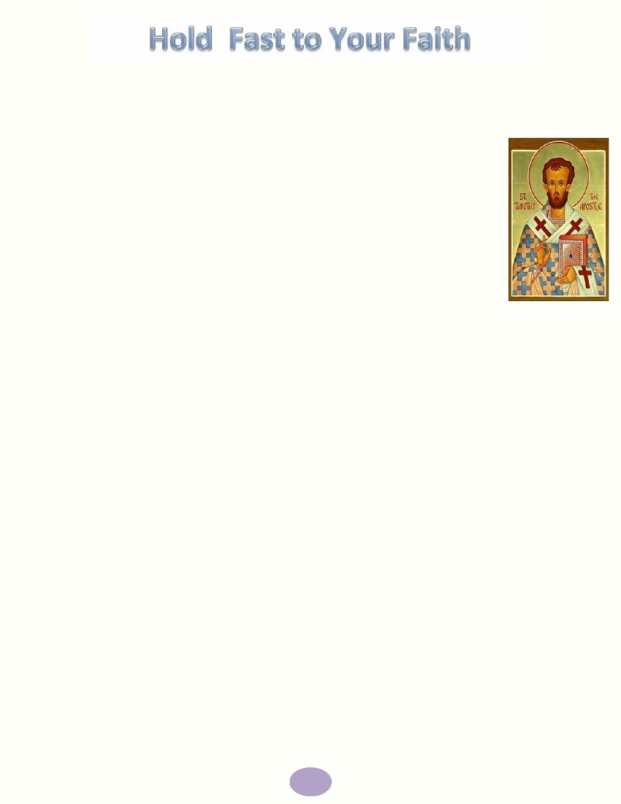
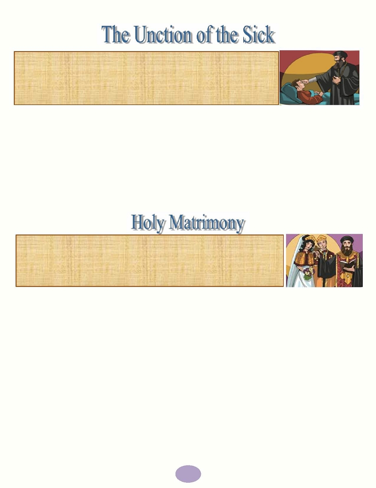
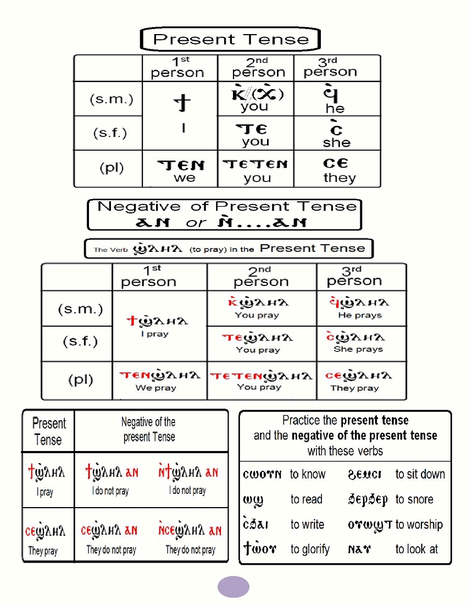

His Holiness Pope Tawadros II
118 Pope of Alexandria and
th
Patriarch of the See of Saint Mark
Table of Contents
Page
St Mark's Festival Anthem- Hold fast what you have
2
Hold fast what you have
3
Hold Fast to Your Faith - The first Epistle to St. Timothy
5
Hold Fast to Your Sacraments - Sacraments of the Church
14
Hold Fast to Your Church Doctrine - It's Your Turn
22
Hold Fast to Your Moral Values - 'Man of Principle'
26
Hold Fast to Your Holiness
30
Memorization
35
Coptic
37
Hymns & Rituals
43
Visit the St. Mark Festival's website at
to find the material for the festival and for
guidelines and information on the tests
1
St. Mark's Festival 2015 Anthem
Hold fast what you have,
That no one may take your crown,
Hold fast what you have
What you have hold fast
Grains of Wheat we sure are planted
Here on earth we live and die,
Deep in heart are always chanted,
God's own promises we live by
Grains of Wheat we're humbly waiting
For God's rain to bless our land
We bring fruits as we were told,
Thirty, sixty 'n' a hundred fold
Hold fast what you have,
That no one may take your crown,
Hold fast what you have
What you have hold fast
Grains of Wheat the days are counted,
Here on earth we live and die,
Enemy is growling out your doors,
Give no slumber to your eyes
Narrow is the gate, broken is the road,
Where we're marching carrying a load,
Upwards far above the skies,
Keep your treasure and your heart
Hold fast what you have,
That no one may take your crown,
Hold fast what you have
What you have hold fast
2
This year's theme is "hold fast what you have" (Revelation 3:11). The Lord gave St. John the Beloved this
advice when He sent His angel to him on the island of Patmos where he was exiled and saw the revelation.
The Lord gave him this revelation for many reasons:
1) To know the necessity of the hardships of this world
2) To know the benefits from these hardships in holding onto the faith
3) To be assured of the final victory for the Lord and His Church over all the powers of evil
through all generations
The church has faced a lot of hardships from the Jews, the pagan Roman Empire, the Greek philosophers,
from different people and religions but it was always victorious at the end through God who loved her.
No matter what hardships we endure on our way to the kingdom of heaven, it will by no mean be
comparable to the glory and joy that awaits us there. We pray to God to help us be steadfast in Him and
complete our struggle to the end!
T HE S ECRET FOR V ICTORY
The secret for the victory of the Holy Church is the Lord Jesus Himself.
He is the one to whom our teacher St. Paul said:
"We are more than conquerors through Him who loved us" (Romans 8:37)
Therefore we have a great deal to hold onto in the Holy Church:
1. Hold onto Your Faith: The Holy Church has been a hero in fighting against all the heresies that Satan and the
heretics have directed toward her and toward the Christian faith in the early centuries.
Arius: against the divinity of the Son
Eutyches: against the mystery of the Incarnation
Macedonius : against the divinity of the Holy Spirit
Sabellius: against the humanity of Christ which is
Nestorius: against the natural union in the Lord
united with His divinity
--And many more who were broken in front of the solidness of the Christian faith.--
The Nicene Creed defined for us, with straight-forward words, the divinity of the Lord, the mystery of
incarnation and salvation, His death, resurrection, ascension into the heaven and His sitting at the right hand
of the Father after He had done for us an everlasting salvation.
The Creed also tells us about God the Father, the Pantocrator, the creator
of Heaven and Earth and how He was manifested to us through the incarnation of
His Son. And after we have only been hearing about Him through the prophets, we
now can see Him incarnated. "The Word became flesh and dwelt among us, and
we beheld His glory, the glory as of the only begotten of the Father, full of
grace and truth" (John 1:14)
3
The Creed also tells about the Holy Spirit, the Lord, and the Giver of Life, who proceeds from the Father and
descended upon the apostles on the day of the Pentecost like tongues of fire sitting on each one of them. The
Holy Spirit is in all of the Church Sacraments to convict us, heal us, and give us gifts.
2. Hold onto Your Holy Bible: The Holy Bible is the word of God to men. It
contains books, characters, events, and beneficial lessons to men across the
generations.
It is important that our study of the Holy Bible becomes a way of life so we can be
faithful witnesses to Christ in the Church and in the world.
3. Hold onto Your Doctrine : Believing in God, no matter what you think of it, is always connected to the true
doctrine. The doctrine which teaches us the "mystery of the church": the union of the head -Christ-
with the body -the Church. Therefore the orthodox way of thinking and living is a must!
4. Hold onto Your Spirituality: Our Lord Jesus Christ has given us through baptism the garments of
righteousness. For this reason, we wear white clothes and a red girdle when we are newly baptized, as a
symbol of purification and renewal by the blood of Christ the Savior.
The baptistery, according to the Holy Tradition, should be located on the southwest area of the church. It
should be a room with an entrance from the outside and another into the church. The newly baptized,
after he had denounced Satan and proclaimed his faith in Christ would:
a) Move from the west to the east; from darkness to light
b) Move from the south to the north; from the place of dishonor to the place of honor
And the life of the believer becomes spiritual and holy since they live by the sacraments,
the Holy Bible and prayer. "But the fruit of the Spirit is love, joy, peace, longsuffering, kindness,
goodness, faithfulness, gentleness, self-control." Galatians 5:22-23
5. Hold onto Your Moral Values: Whoever is renewed by the Spirit and walks by the Spirit should live a
virtuous life daily. But this needs spiritual strive and guidance from the father of confession and daily
spiritual exercises for a man to get used to holding himself accountable: before a sin, during a sin and after a sin.
Therefore none of us should be negligent about the "little foxes" (Song of Songs 2:15) who come in from the
smallest holes in the wall and after it has eaten and gotten fat it can't get out from the wall- protected field
anymore. So it stays in the field hiding and eating till it becomes a danger to the field and the owner of the
field. That is why we should pay great attention to our daily behavior, according to the commandment of the
apostle to "Have regard for good things in the sight of all men" (Romans 12:17) . Here the apostle tells us
that to have regard for good things in the sight of all men, not only inside the church. This good behavior will
be a way of preaching the teachings of our Lord Jesus Christ.
"That they may see your good works and glorify your Father in heaven." Matthew 5:16
4

The 1 st Epistle to St. Timothy
Test questions will include readings from the Epistle of 1 Timothy as well as this article.
Who is St. Timothy?
St. Timothy was born in the city of Lystra (in present day Turkey). His father was Greek
and his mother, a Jewish Christian (Acts 16). He met St. Paul first in Lystra. He became a
disciple of St. Paul who invited him to join him on his travel. St. Paul circumcised him in order
to be accepted by the Jews. He followed him in his travels, and shared his labors. St. Paul
ordained him a bishop over the city of Ephesus and the neighboring cities. St. Timothy
preached there and converted many to the Christian faith and baptized them.
St. Paul wrote two epistles to St. Timothy: the first of which was in 65 A.D., and the
second was shortly before 67 A.D., urging him, "Take heed to yourself and to the
doctrine, continue in them, for in doing this you will save both yourself and those who hear you" (1
Tim. 4:16) . He also wrote to him about the qualifications of a bishop, priest, deacon, and the widows. He
cautioned him also about false prophets and commanded him not to lay his hand on anyone in haste, but only
after thorough examinations and testing. St. Paul called Timothy his son and his beloved.
St. Timothy shepherded the flock of Christ extremely well, and he illuminated minds by his teachings,
instructions, and reproaches. He continued to rebuke the Jews and the Greeks, therefore they envied him and
congregated against him and started beating him until he was martyred in the city of Ephesus.
Connect the fact with the corresponding verse from the Holy Bible.
St. Timothy's circumcision
1Timothy 1:3 1
St. Paul considered St. Timothy as his son
Timothy 1:1
St. Paul ordained him bishop of Ephesus
Acts 16:3
St. Timothy was a young man
1 Timothy 12:4
St. Paul wrote this epistle
1 Corinthians 4:17
5
Read Chapter 1: Warnings!
St. Paul tells St. Timothy to remain in Ephesus to oppose the false teachings that deviate from the sound
doctrine and causing disputes rather than edification. Thus, they lead people astray. St. Paul makes it clear that
the commandment is based on love. Sound teaching brings about love from a pure heart, right
conscience and sincere faith. Unlike false teachings that bring disputes.
St. Paul talks about the Old Testament laws and how they should be used for their true purpose. The law was
made for the unrighteous to realize their wickedness and search for Christ who will lead them as a savior and
give them the righteous life and raise them above the law. Christ came to save everyone even the people who
commit the greatest sins.
St. Paul talks about himself and remembers his own sins. He recalls how he has
persecuted the church, but out of ignorance. Therefore, God has mercy on him and
transformed him into a servant and preacher and gracefully gave him the gifts and fruit
of the Holy Spirit.
At the end of the chapter, St. Paul mentions Hymenaeus and Alexander who
deviated from sound doctrine. St. Paul talks about delivering them to Satan
(disciplining them) in order to repent and return to the sound teaching.
Chapter 1 Activity:
Write the verses from Chapter 1 that go with each sentence:
1. St. Paul emphasizes that the service that he does is from God.
______________________________________________________________________________________
2. In the litany of the Gospel, we say "For You are the life of us all, the hope of us all, and the salvation of us
all." ___________________________________________________________________________________
Questions for discussion:
3. What is the meaning of "a true son in the faith"? (Verse 2)
_______________________________________________________________________________________
4. How did St. Paul describe love in verse 5?
____________________________,____________________________,____________________________
5. How can our love be that way?
_______________________________________________________________________________________
_______________________________________________________________________________________
6
6. Match the verses from the Book of St. Timothy with the verses on the right.
1 Timothy 1:7
James 3:1, Romans 3:21
1 Timothy 1:8
Romans 10:4
1 Timothy 1:9
Matthew 9:13, Romans 7:7
7. St. Paul thanks God who trusted his faithfulness and strengthened him and called him for service even
though he is not worthy because of his previous sins:
1 ____________________ 2 ____________________ 3 ____________________
8. Who are Hymenaeus and Alexander? (2 Timothy 2:17, 2 Timothy 4:14)
____________________________________________________________________________________
Read Chapter 2: Faithfulness in Prayer
St. Paul says that prayers are needed for fighting the wrong teaching and defending the
sound doctrine. St. Paul teaches us to pray for all men, especially for leaders that God
guides them to lead wisely that we may live in peace.
St. Paul talks about God's desire for all men to be saved, so He sent His true Son to save us.
Christ is the only mediator between man and God by covering our sins and redeeming us.
St. Paul gives instructions for men and women on how they should worship and what their different roles are in
the church.
Chapter 2 Activity:
1. Who is the only Mediator between God and men? Write the verse.
________________________________________________________________________________
2. Which of these were St. Paul's advices for men and which for women?
-
Adorn themselves in modest apparel
men
women
-
Without wrath
men
women -
With propriety and moderation
men
women -
No costly clothing
men
women -
Lifting up holy hands
men
women -
Not with braided hair or gold or pearls
men
women -
No doubting
men
women -
Professing godliness with good works
men
women -
In silence with all submission
men
women
7
Chapter 3: Qualifications for Bishops and Deacons
In this chapter, St. Paul highlights the main qualifications of a bishop and a deacon. The servant of God has
to have certain qualifications. St. Paul covers many:
Their desire - should be for good works
Their attitude - hospitable, temperate, not violent
Their discipline - abstaining from wine, demonstrate self-control and good behavior
Their ability to teach and their spiritual maturity, their reputation and their faith.
St. Paul ends the chapter by describing the church as the pillar and ground of the truth. By abiding in the
church, we understand the truth.
Activity for chapter 3
1. Read verses 1-13 and write the characteristics of bishops and deacons in the appropriate box
Bishop
Deacon
2. Write down the desired characteristics of deaconesses or priests' wives as described by St. Paul (v. 11).
________________________________________________________________________
________________________________________________________________________________
3. In verse 15, St. Paul described the church as:
a. __________________________ b.
__________________________c.
__________________________
8
4. Match the parts of the verse in 1 Timothy 3:16 to its explanation:
Verse: 1 Timothy 3:16
Explanations
"And without controversy great is
Every nation believed in Him
the mystery of godliness"
"God was manifested in the flesh,
Justified in the Spirit"
Ascended to the heavenly glory
"Seen by angels"
The Second Hypostasis was
incarnate and became a man
Christ the Savior
"Preached among the Gentiles"
was preached among the
Gentiles not just the Jews
The Holy Spirit testified to His
"Believed on in the world"
righteousness
"Received up in glory"
The angels saw Him with us in
His incarnation
Read Chapter 4: Duty of the Bishop
St. Paul warns St. Timothy about people departing from the faith and how they will deceive others to follow their
way. St. Paul mentions that these people will forbid others to get married (This is not what God intended.
God sanctified marriage) and to abstain from foods (God created everything good, nothing is unclean).
Here we have to differentiate between false spiritualism and self-control in fasting. When we fast, our
purpose is to promote godliness and control ourselves in order to nourish our spirit. We do not abstain from
food because it is unclean, but to focus on nourishing the spirit not torturing the body. St. Paul continues
by saying that God has created these for us and they should be done in holiness.
St. Paul also tells St. Timothy that bodily exercise (those directed toward self-righteousness and hypocrisy) does
not profit much, but what is important and profitable is the spiritual exercise (those directed toward godliness).
Train yourself to godliness.
Finally, St. Paul gives St. Timothy some general instructions. "Let no one despise your youth" -
conduct yourself in a manner that will be a good example to others. He wants St. Timothy to "be an
example to the believers in word, in conduct, in love, in spirit, in faith, in purity" (1 Timothy 4:12). He
does not want St. Timothy to be discouraged, but to hold fast what he has regarding the faith and doctrine.
9

Activity for chapter 4
1. Read 1 Timothy 4:1; find the words that mean the following:
a. Leave/deny the faith:
_________________
b. The Holy Spirit informs the prophets of future events:
_________________
c. The time between the ascension of Christ to His second coming:
_________________
d. He has false teachers who spread misleading teachings:
_________________
2. How did St. Paul describe false teachers? Verse 2-3
_______________________________________________________________________________________
3. Connect the sayings of St. Paul to its meaning
Sayings of St. Paul
Meanings
Let no one despise your youth
His speech and actions should be free
from all evil desire
Be an example to the believers in
Reading the Holy Bible gives him a
word
message to present to the people
In conduct
Preserve the faith
In love
God's words will be on his lips
A servant should teach and watch
In spirit
himself before teaching others
In faith
His love is for everyone especially
those who offend him
Early in his service, St. Timothy was a
In purity
youth so St. Paul is encouraging him;
he has the power of Christ
Give attention to reading
His spirituality shows in his
worship and conduct
To exhortation
His conduct is Christian according to
the commandments of God
Take heed to yourself
The true teaching of the principles
of Christian faith
109
Read Chapter 5: Pastoral Care
As a bishop, St. Timothy is a father to his congregation and they are his
responsibility. St. Paul gives him instructions on how to deal with all, men and
women, young and old. He gives him instructions regarding the widows and
ministering to them.
He gives him instructions pertaining to priests and ordinations. He also tells him
how to deal with someone who sins, and how to take care of his health.
Activity for chapter 5:
1. What were St. Paul's recommendations to St. Timothy about each of these groups of people?
Widows: ______________________________________________________________________
Elders: ________________________________________________________________________
2. In 1 Timothy 5, find the verses that give these meanings:
"For we hear that there are some who walk among you in a disorderly manner,
not working at all but are busybodies." 2 Thessalonians 3:11
"You shall rise before the gray headed and honor the presence of an old man,
and fear your God." Leviticus 19:32
"For if a man does not know how to rule his own house,
how will he take care of the church of God?" 1 Timothy 3:5
"You shall not muzzle an ox while it treads out the grain." Deuteronomy 25:4
"Whoever is deserving of death on the testimony of two or three witnesses; he
shall not be put to death on the testimony of one witness." Deuteronomy 17:6
"And remain in the same house, eating and drinking such things as they give,
for the laborer is worthy of his wages." Luke 10:7
11
Read Chapter 6: Pastoral Care and Final Notes
In this chapter, St. Paul gives instructions to St. Timothy as a bishop regarding other matters; slavery, false
teachers, the good fight of faith, and the rich. St. Paul concludes his epistle with a final exhortation to St.
Timothy.
Christianity does not support slavery, but St. Paul is saying that if the system allows for this unfortunate
reality, then let us deal with it in a Christian way. Let slaves present themselves as godly people,
demonstrating Christian behavior that they may even bring others to faith. In the same manner, if they have
believing masters, they should not take advantage of them.
St. Paul instructs St. Timothy on how to react if false teachers arise. He gives the reasons behind false
teaching and the results that come from it. He tells him to withdraw himself from such people.
He begins to discuss how greed can lead to selfishness and lusts because rich people use their wealth for
pleasure and not for godliness in helping others. He warns St. Timothy about these issues and to not hold fast
to riches, but to spirituality. He tells him to "flee these things and pursue righteousness, godliness, faith, love,
patience gentleness" (1 Timothy 6:11).
He concludes the Epistle by commanding St. Timothy to "guard what was committed to his trust and to keep
this commandment without spot, blameless until Our Lord Jesus Christ's appearing." (1Timothy 6:
14, 20)
12
Activity for chapter 6:
1.What is the true teaching? What is the wrong teaching? Verses 3-5
_____________________________________________________________________________________
_____________________________________________________________________________________
_____________________________________________________________________________________
2. In verse 6, _______________ + _______________ = GREAT GAIN
3. In 1 Timothy 6, find the verses that give these meanings:
________________ "Naked I came from my mother's womb, and naked shall I return there." Job 1:21
________________ "Let your conduct be without covetousness; be content with such things as you have,
For He Himself has said, "I will never leave you not forsake you" Hebrews 13:5
4. What does St. Paul recommend in verse 12?
_______________________________________________________________________________________
______________________________________________________________________________________
5. What were St. Paul's commandments to the rich?
_______________________________________________________________________________________
_______________________________________________________________________________________
13
In our Coptic Orthodox Church we have 7 sacraments. A Sacrament is an invisible
grace we receive when special prayers are prayed by a priest to change a
visible substance through the power of The Holy Spirit.
What is the meaning of the word 'Sacrament'?
The term sacrament combines two elements: one visible, the other invisible - one can
be seen, or tasted, or touched, or heard while the other remains unseen to the eyes of the flesh. This is a
divine gift, given through the work of the Holy Spirit. The sacraments have been instituted by our Lord Jesus
Christ Himself. He has passed it on to His Holy Apostles. Later, the Holy Apostles have passed it to the
Church through the Popes, Bishops, and Priests, by the 'putting of the hands.'
"For I received from the Lord that which I also delivered to you." 1 Corinthians 11:23
What's the significance of the visible substance in the Sacrament?
It is very important for the human being, who is in the flesh, to feel, touch and see something visible and
tangible. In this St. John Chrysostom says, " If the soul was without a body, the divine gifts would have been
given in this same form. Therefore, the Lord Jesus Christ has used the clay substance to heal the blind man.
In the same manner, power radiated from the Lord's cloak which healed the woman who had
a flow of blood for twelve years. "
What is the visible substance of each of the sacraments and its biblical reference?
Sacrament
Visible Substance
Invisible Grace
Biblical Verse
Forgiveness of Adam
"And now why are you waiting?
Arise and be baptized, and wash away your
Baptism
Water
and Eve's sin
sins, calling on the name of the Lord."
(the original sin)
Acts 22:16
But you have an anointing from the Holy
Confirmation
Confirmation of the
One, and you know all things.
(Holy Myron)
Olive Oil
Holy Spirit
1 John 2:20
Repentance
If you forgive the sins of any, they are
and
The Repenter
forgiven them; if you retain the sins of any,
(Himself)
Forgiveness of sins
Confession
they are retained." John 20:23
Holy
"He who eats My flesh and drinks
Oblation
Abiding in and with
My blood abides in Me, and I in him."
Communion
(Bread and Wine)
the Lord Jesus
John 6:56
Christ
"And they cast out many demons, and
Unction
Lamp
anointed with oil many who were sick, and
of the Sick
(Oil and Wick)
Forgiveness and
healed them." Mark 6:13
Holy
healing
So then, they are no longer two but one
Matrimony
Bride and Groom
flesh." Matthew 19:6
Union of the two
"Whom they set before the apostles; and
Priesthood
Priest (himself)
when they had prayed, they laid hands on
Servant of the
them." Acts 6:6
Holy Sacraments
14
D OOR OF ALL THE S ACRAMENTS
Baptism is essential, it is the only door which prepares us to enter the kingdom of
heaven and attain eternal salvation. "Jesus answered and said to him,
"Most assuredly, I say to you, unless one is born again,
he cannot see the kingdom of God."" John 3:3
Symbols of Baptism in the Old Testament:
The Flood
The crossing of the Red Sea
Symbols of Baptism in the New Testament:
The Lord's death and burial- "Or do you not know that as many of us as were baptized into Christ Jesus were
baptized into His death? Therefore we were buried with Him through baptism into death, that just as Christ was
raised from the dead by the glory of the Father, even so we also should walk in newness of life. For if we have
been united together in the likeness of His death, certainly we also shall be in the likeness of His
resurrection" Romans 6:3-5
For example, the baptism of the Ethiopian Eunuch:
"Now when they came up out of the water, the Spirit of the Lord caught Philip away,
so that the eunuch saw him no more; and he went on his way rejoicing." Acts 8:39
'Myron' is a Greek word which means ointment or spice. It is one of sacraments
directly related to Baptism. For through the sacrament of Baptism we are given a
second birth (forgiven of the original sin). Through the Holy Myron we receive
the seal of the Holy Spirit.
Therefore, it is also called 'Sacrament of the Holy Spirit' or
'Sacrament of Confirmation' .
"But you have an anointing from the Holy One, and you know all things."
1 John 2:20
Symbols in the Old Testament:
"And you shall make from these (spices & perfumes) a holy anointing oil, an ointment compounded according to the
art of the perfumer And you shall anoint Aaron and his sons, and consecrate them,
that they may minister to Me as Priests." Exodus 30:25-30
Symbols in the New Testament:
"What happened to the people of Samaria when they received the sacrament of Baptism, but did not receive the
Holy Spirit yet? When the Holy Apostles heard of this, they sent St. Peter and St. John, "who, when they had come
down, prayed for them that they might receive the Holy Spirit."" Acts 8:15
15
It is the sacrament which we practice when we repent from all that we have done in sins
and evil doings. When we cast those sins away and repent, we present ourselves to the
Priest who absolves us with the absolution prayer. At that point, our sins would be
transferred from our account to the Lord's, who forgives our sins.
"And many who had believed came confessing and telling their deeds."
Acts 19:18
The Lord has established this sacrament a long time ago, and it has many conditions:
Gospel. " And I will give you the keys of the kingdom of heaven, and whatever you bind on earth will be
bound in heaven, and whatever you loose on earth will be loosed in heaven." Matthew 16:19.
Along with the absolution of our sins, which our father the Priest grants us, he also cuts out all the chains of sin so
that we no longer commit such evil, as the grace of our Lord accompanies us.
Why do I have to confess to a priest? Isn't he a human like us?
Why can't I confess directly to God? What if he tells my parents?
Yes, our father the Priest is a human just like us. However, we confess to our Lord Jesus Christ in the presence of our
father the Priest. The Priest is a minister of the mysteries of God. He has the authority to administer the Church
Sacraments.
Confessing to our father the Priest causes the confessor to experience a type of embarrassment, as he confesses his
sins to God in the presence of our father the Priest, which is good because this feeling motivates us to not repeat
the same sins. Additionally, we receive the appropriate spiritual guidance and how we can overcome those
weaknesses.
Rest assured, it is impossible for our father the Priest to disclose any of our sins or weaknesses with anyone.
Often, we complain that specific sins have been taking control of us and we cannot get rid of them. Through the
guidance
and
prayers
of
our
father
in
confession,
we
can
conquer
those
sins.
His prayers also grant us encouragement and strength so that we may stand as the prodigal son who said,
" I will arise and go to my father, and will say to him, "Father, I have sinned against heaven and before you, and I
am no longer worthy to be called your son. Make me like one of your hired servants."" Luke 15:18-19
So as our father in confession reads the absolution for us, we receive the forgiveness of our sins from our Lord Jesus
Christ Himself and not our father in confession, but we hear it from the Priest. Only the Priest has this power to
absolve our sins which the Lord has given him.
If you forgive the sins of any, they are forgiven them; if you retain the sins of any, they are retained."
John 20:23
16
H OW TO CHOOSE A FATHER OF CONFESSION ?
as you need.
needed.
W HAT ARE THE BOUNDARIES BETWEEN ME AND MY FATHER OF CONFESSION ?
like the tree leaves."
towards him as a spiritual father
Symbols in the Old Testament:
I have transgressed the commandment of the Lord and your words, because I feared the people and obeyed
their voice. Now therefore, please pardon my sin, and return with me, that I may worship the Lord." 1 Samuel
15:24-25
Nathan said to David, "The Lord also has put away your sin; you shall not die. However, because
by this deed you have given great occasion to the enemies of the Lord to blaspheme, the
child
also
who
is
born
to
you
shall
surely
die."
2
Samuel
12:13-14
Symbols in the New Testament:
to St. Peter, "Assuredly, I say to you, whatever you bind on earth will be bound in heaven, and whatever
you loose on earth will be loosed in heaven. Matthew 18:18
"Receive the Holy Spirit. John 20:22
T HE ELEMENTS OF CONFESSION :
17
T HE STEPS OF FIGHTING ANY SIN OR DESIRE :
faith, love, peace with those who call on the Lord out of a pure heart."
2 Timothy 2:22
life! Genesis 19:17
-It is called the 'mystery of all mysteries' because it is the common mystery of all
the other sacraments or mysteries.
-It is known as the 'mystery of fellowship' because all the believers partake of it.
-It is also known as the 'mystery of Eucharist' because it is the mystery of
thanksgiving.
The Lord Jesus Christ established this sacrament to:
bread, he will live forever; and the bread that I shall give is My flesh, which I shall give for the life of the world."
John 6:51
forgiveness of sins." Colossians 1:14 Our father the Priest also prays in the holy liturgy and says, "Given for the
remission of sins and eternal life to those who partake of Him." The Institution Narrative
proclaim the Lord's death till He comes." 1 Corinthians 11:26 Our father the Priest also prays in the Holy Liturgy
and says, "For every time you eat of this bread and of this cup, you proclaim My Death, confess My Resurrection,
and remember Me till I come."
In the Gospel of St. John, chapter 6, we see the Lord Jesus Christ, the fulfiller of all our needs, our souls, bodies and
spirits. He offers Himself to us as the Bread of life. When the human eats regular bread, tissues grow within him
which helps him to continue living. In the same way, when we eat from the Holy Body of our Lord Jesus Christ, we
unite with Him and He grants us life. The Lord calls Himself the Bread of life because there is no life without bread
(food). Jacob sent gifts, walnuts and almonds from the land of Palestine, to his son Joseph in exchange for bread for
him and his children. He asked for bread because almonds and walnuts do not give life as bread does. The almonds
and walnuts here are a symbol of the vain pleasures of this world.
18
Symbols of the Holy Communion in the Old Testament:
Melchizedek's sacrifice consisted of wine and bread. And he was a high Priest of God. (Exodus 14)
The manna which came from heaven unto the people of Israel . "This is the bread which came down from heaven--
not as your fathers ate the manna, and are dead. He who eats this bread will live forever." John 6:58
C ONDITIONS FOR PARTAKING WORTHILY OF THE H OLY C OMMUNION :
prayers cleanse the human's body and soul and grant him spiritual and mental preparation to
partake from the Holy Communion.
What happens if we partake of the Communion unworthily?
"Whoever eats this bread or drinks this cup of the Lord in an unworthy manner will be guilty
of the body and blood of the Lord." 1 Corinthians 11:27
19

This sacrament was established by the Lord Jesus Christ when He told the
disciples "And heal the sick there, and say to them, 'The kingdom of God
has come near to you.' Luke 10:9 and the Apostles practiced it "And they cast
out many demons, and anointed with oil many who were sick, and
healed them." Mark 6:13
This sacrament heals from the sickness of the body, soul and spirit through the forgiveness of sins by applying pure
oil and our father the Priest prays on the sick person. He puts 7 wicks of cotton in the dish of oil and prays 7 rituals
prayers which have been passed on from the Holy Apostles. The 7 prayers symbolize the gifts of the Holy Spirit by
which we are healed in the name of the Lord Jesus Christ.
St. James has commanded us saying, "Is anyone among you sick? Let him call for the elders of the church, and let
them pray over him, anointing him with oil in the name of the Lord. And the prayer of faith will save the sick, and
the Lord will raise him up. And if he has committed sins, he will be forgiven.
James 5:14-15
From the beginning of creation,
"And the Lord God said, "It is not good that man should be alone;
I will make him a helper comparable to him." Genesis 2:18
The Lord Jesus Christ has established this sacrament, and blessed it, when He attended the
wedding of Cana of Galilee. There He also manifested His glory when He did His first miracle,
"and His disciples believed in Him." John 2:11
There are many references for the greatness of this mystery:
"He who finds a wife finds a good thing, And obtains favor from the Lord." Proverbs 18:22
Even more than this, the Lord symbolized His relationship with the Church with this sacrament:
-"This is a great mystery, but I speak concerning Christ and the church." Ephesians 5:32
-"Husbands, love your wives, just as Christ also loved the church and gave Himself for her," Ephesians 5:25
Therefore, we refer to the Christian family as the 'icon of the church'. The family is the copy and the Lord is the
original. We also refer to the Christian family as the 'small church'. St. Paul teaches his disciple, Philemon,
"to the beloved Apphia, Archippus our fellow soldier, and to the church in your house" Philemon 1:2
20
The Priest is called the minister of the Holy Sacraments, because without him,
none of the sacraments can be performed. Without Priesthood, the church
cannot continue and no one can receive the gifts of the Holy Spirit.
'Priest' means 'Minister'. The term is derived from the Hebrew term 'Cohen' which means the prophet of God. God has
commanded that sacrifices be offered through the Priest.
The Lord established this sacrament when He chose His disciples, twelve of which are His Apostles. He sent them to
evangelize saying, "And as you go, preach, saying, 'The kingdom of heaven is at hand.' Matthew 10:7 He also said to
them, "You did not choose Me, but I chose you and appointed you that you should go and bear fruit, and that
your fruit should remain," John 15:16
H ONORING THE P RIESTHOOD :
The humble person speaks to everyone with respect and tenderness, especially when talking to an older person. The
Holy Bible commanded the disciple to honor and respect his teacher. Also the employee is expected to respect his
manager or employer. All citizens are expected to respect the rules and laws of their nation and systems. It is
written in the Bible, "Therefore submit yourselves to every ordinance of man for the Lord's sake, whether to the
king as supreme," 1 Peter 2:13 and it is also written "Likewise you younger people, submit yourselves to your
elders." 1 Peter 5:5
"The Priesthood in our church is an immersive spiritual fatherhood, which the priest receives from the Lord Jesus
Christ. This fatherhood and love radiates from him to immerse the whole church and every soul in it."
H.G. Bishop Raphael
W HY DO WE KISS THE HANDS OF OUR FATHER THE P RIEST ?
Because of the respect we have towards Priesthood, we kiss the hands of our father the Priest acknowledging that
those hands are sanctified regularly by holding the Body of our Lord Jesus Christ in every Liturgy. In the
Old Testament, we find many scenarios showing the reverence of Priesthood. For example, in the story of Abiram,
Korah, and Dathan (Numbers 16:1-50). In the New Testament, the Lord teaches us to honor Priesthood in the story
of 'the healing of the leper'. The Lord told the leper after he was healed, "And Jesus said to him, "See that you tell no
one; but go your way, show yourself to the priest, and offer the gift that Moses commanded, as a
testimony to them." Matthew 8:4
Our father the Priest represents the Lord Jesus Christ on Earth.
The Lord spoke to the Apostles alone and said, "Go therefore and make disciples of all the nations, baptizing them
in the name of the Father and of the Son and of the Holy Spirit, teaching them to observe all things that I have
commanded you;" Matthew 28:19-20 And handed them alone the mystery of His Holy Body and Blood, and said to
them "do this in remembrance of Me." Luke 22:19
21
IT'S YOUR TURN
What is faith? Faith is a spiritual life in which you have a strong relationship with God. Faith is based on experience
of those who lived it and held onto it.
" Faith which was once for all delivered to the saints." Jude 1:3
This means we cannot be called believers just because we were born Christian, but we need to live and grow in this
faith, and hold onto it through our spiritual practices and our sound knowledge of our orthodox doctrine that our
fathers the apostles received from the Lord Jesus Christ and handed it down to the church generation after
generation.
OUR ORTHODOX FAITH IS:
1- One God
4- Divine incarnation
7- His ascension to heaven
2- Divinity of Christ
5- Christ's Salvation
8- His second coming and
3- The Holy Trinity
6- Resurrection of Christ
eternity
How did this faith get to us sound and true without change throughout all these years?
We thank God that our Church Fathers preserved the faith for us and suffered to do so. Councils were created to
keep the doctrine of the Church as taught by our Lord Jesus Christ, the Holy Scriptures, the Apostles and their
successors.
What is a 'Council'? It is a meeting between the Church Fathers, which takes place to discuss specific situations,
such as heresies.
Types of Councils:
1. Area council: discusses all the pastoral and doctrinal matters within that
area. The first one was the council of Jerusalem that took place in the year
50 A.D. during the apostolic era.
2. Ecumenical Council : Is a meeting between all the Church Fathers and
teachers, worldwide, to discuss a matter pertaining to the Christian faith,
such as the rising of a heresy or a split among the Christians.
The Ecumenical Councils were:
a. Arranged based on an invitation from a Christian Leader (ex. Emperor)
b. Between the Bishops of the Eastern and Western Church
c. Formed to take a decision, a first of its kind, towards the discussed issue. Such decisions were
taken unanimously, and without any pressure or obligation of any sort.
These conditions were only met in 3 councils:
1. Council of Nicaea
2. Council of Ephesus
3. Council of Constantinople
22
Let's learn more about the leaders and champions of those councils, whom we ought to imitate as Christians. It is
indeed our role to defend our true faith and pass it on from one generation to another. It is your turn to be the
champion.
1. Council of Nicaea's Champion: Pope Athanasius the Apostolic. He was born in the great city of Alexandria
around 269 A.D., to pagan parents. He received his education from a Christian school, believed in the Lord Jesus
Christ and grew strong in His love. He became Pope Alexander's disciple, who ordained him a deacon. Pope
Athanasius was very knowledgeable in the theological sciences. He defended the faith against the Arian heresy
while he was still a young deacon. He departed in 373 AD after a long journey of endless efforts in preserving the
faith. The name of Pope Athanasius is greatly exalted throughout the whole world for his strong upright faith
and position against Arius. St. Athanasius was named " Athanasius contra mundum ", that is, " Athanasius against
the world ", and it is such a great honor that he is among the fathers of our Coptic Orthodox Church.
.
2. Council of Constantinople's Champion: Pope Timothy the 2 nd sat on the throne of St. Mark after Pope Peter the
22 nd , in the year 380 AD. He was named "the Poor" because he gave all his wealth to the poor. He was the
disciple of Pope Athanasius, and assisted him throughout his fight against Arius. He also defended the faith
against the Macedonian heresy. He shepherd his flock with faithfulness and departed in peace.
.
3. Council of Ephesus' Champion: Pope Cyril the Great (Pillar of Faith). He was born between the years 375 AD -
380 AD. He was Pope Theophilus' nephew. He joined the Theological School of Alexandria to study the necessary
sciences by which he could defend the faith against the heretics. He was ordained a deacon, then a priest by
Pope Theophilus. He was ordained a Patriarch in the year 412 AD. Throughout the Church's history, Pope Cyril's
name has been greatly exalted for his upright faith against the Nestorian heresy. He faithfully
completed his struggles and departed in peace in the year 444 AD.
. Now let us learn about the three ecumenical councils and what their outcomes were.
C OMPARISON BETWEEN THE 3 ECUMENICAL COUNCILS :
Council of Nicaea
Council of Constantinople
Council of Ephesus
COUNCIL:
325 AD
381 AD
431 AD
HELD
Arian Heresy
Macedonian Heresy
Nestorian Heresy
FOR:
4th century
4th century
5th century
ERA
HELD:
Pope Alexander,
Pope Timothy,
Pope Cyril,
the 19th Pope
the 22nd Pope
the 24th Pope
LED
King Constantine
King Theodosius
King Theodosius Jr
BY:
ARRANGED
318
150
200
BY:
Pope Timothy and
St. Cyril (Pillar of Faith) and
NUMBER OF
St. Athanasius
St. Gregory the
Abba Shenouda
BISHOPS
Theologian
(Archimandrite)
ATTENDED:
COUNCIL'S
CHAMPION:

23
COUNCIL:
Council of Nicaea
Council of Constantinople
Council of Ephesus
325 AD
381 AD
431 AD
HERESY
Arius claimed that the Lord
Macedonius tried to
Nestorius wanted to
:
Jesus Christ was only human,
spread the Arian heresy
underestimate the value of
like us, and was not the God
but in a different way. He
the Mother of God, St.
Incarnate. He referred to John claimed that the Holy Spirit
Mary. He concluded that
14: 28 which say "My Father is
is not part of the Holy
based on his claim that the
greater than I". He
Trinity but is rather a
Lord is not divine, and
misinterpreted this verse saying creature, such as an angel.
therefore, St. Mary is an
that the Father is greater than
This is to say that the Holy
ordinary mother. Hence,
the Son and the Son is of less
Spirit is not divine.
she cannot be called
value.
Theotokos.
ARGUMENT St. Athanasius, who was not 25
St. Timothy answered
"great is the mystery of
AGAINST
years old yet, was able to
Macedonius from the
godliness:
THE HERESY: answer Arius, who was 55 years
Holy Bible:
"God was manifested in
of age.
"For there are three that the flesh..." 1 Timothy 3:16
St. Athanasius built his
bear witness in heaven:
argument based on the
the Father, the Word, and
From here, St. Cyril began
following verses:
the Holy Spirit; and these to explain to the Council the
"... He who has seen Me has
three are one." 1 John 5:7
incarnation of the
seen the Father; ... I am in the
Lord Jesus Christ by the
Father, and the Father in Me?
And since the Holy Spirit is
Holy Spirit which came
John 14:9-10
the Spirit of God, as
upon St. Mary,
written in the Holy Bible,
as mentioned in Luke 1:35.
"All things that the Father
then how can God's Spirit
This is a unity between the
has are Mine..."
be apart from God? Saying divine and human natures.
John 16:15
that God is without a Spirit St. Cyril used the example
is essentially saying that
of fire (heat) and steel.
"I and My Father are one."
God is without a life, which
The two can be united,
John 10:30
is impossible.
yet their natures remain
unchanged. Likewise,
the Lord's divinity has
united
with His humanity in St.
Mary's womb, yet neither
of the natures changed.
COUNCIL'S 1. Excommunicated Arius and
1. Excommunicated
1. Excommunicated
DECISIONS:
his followers.
Macedonius and his
Nestorius and his
2. Established the feast of
followers.
followers.
Resurrection
2. Added on to the Nicene
2. Established the Nicene
3. Establishing the Nicene
Creed, "Yes, we believe
Creed's introduction,
Creed, beginning with "Truly,
in the Holy Spirit "
"We exalt you, O Mother
we believe "
of the True Light "
What a sorrowful and sad ending to those heretics who have gone astray from the true faith!

24
Application:
1. Who are those who have gone astray? ________________________________________________________
__________________________________________________________________________________________
2. In your opinion, what are the reasons which have caused those heretics to go astray from the upright faith, even
though they were great servants? Is it their self-reliance? Their friends? Or what?
__________________________________________________________________________________________
__________________________________________________________________________________________
3. How can we hold on to our upright faith, which has been handed to us from our saintly fathers?
__________________________________________________________________________________________
__________________________________________________________________________________________
__________________________________________________________________________________________
Our church is a church of tradition , which means that we live the present based on the
history of our fathers, and with our present we prepare the future.
25
.
'MAN OF PRINCIPLE'
What does 'principle' mean?
We often hear this phrase, 'man of principle'? From your point of view, what does this phrase mean?
Principle is not merely a transient word, but rather COMMITMENT together with ACTION . It is
part of the human's composition and personality, and without it a person becomes like a leaf, easily blown
away by the wind.
Principle is the foundation of man's and society's personality. It is the axis of ideas and behavior, and the
scale upon which the attitudes and reactions are measured. It is a vision and an identity. It is the position,
conviction, and belief. It is integral in essence.
Principle is the path you take, the method, the way of thinking, the idea or approach from which all your
work, speech, thinking or behavior in life can be developed. To be a 'man of principle', means that you
acquire a distinguished style of dealing with matters.
It is an internal reflection which precedes the action. And it is a formation of an opinion about a
given event. It is the controller of the human character.
It is the firm belief which drives human behavior, according to his beliefs and culture, so that it does not
deviate.
It is that moral approach that man laid down for himself, in order to walk in its light throughout his life
and not deviate from it.
For example, principle is what affects the lawyer's decision to whether or not he/she should accept a given
case.
The greatest examples of our mankind were of principles. They lived and sacrificed their lives for the sake
of their principles.
So, my dear friend, do you live by certain principles? And to what extent are you abiding by those
principles?
What are the factors underlying principle? And how are principles formed?
Q. Do you think that situations and conditions shape our principles? And do you think that everyone should
abide by a certain set of principles?
-
The factors and constituents underlying principles are the discipline that a human was raised upon
from the very early stages of his life within his family and church. We learn the sound principles from the
sound education. We learn them from studying and analyzing the many experiences which we pass
through in life. A given principle is crystallized in our personality when we pass through many
experiences, holding steadfast in our principles.
-
The sound principles also urge us to acquire virtues and be witnesses to the truth. Thus, we should
never defend a wrong principle not to lose our reward.
26
The concept of flexibility in the application of the principle.
Are there specific features of the concept of flexibility so that it doesn't get misinterpreted as the
slackening in the application of the principle in our lives? Therefore, we should learn about the true
meaning of the 'firm flexibility'.
Question for discussion: What do you think of the 'flexibility' as adopted by some of the youth nowadays?
And does flexibility contradict with principles?
Devotion to a principle is crucial and necessary. Nonetheless, the insistence on such a principle should be
rooted in sound basis and not out of stubbornness. Awareness is the determinant between the two.
Therefore, flexibility with our principles must be driven by our love to one another. St. Moses has given us a great
example of this concept when he broke his fasting law for the two visitors who came from a far place. Still, we
often struggle with the battle between our principles and our evil desires.
If you truly believe in a principle, you would be able to bear whatever hardships that you may face because of it.
Otherwise, you will find yourself letting go of it with the first battle you come across. What's even better is to
abide by your principles even when no one sees you. It is then a matter of honesty before God, who "...will judge
the secrets of men " Romans 2:16. We heard of Joseph the righteous when he said, "...How then can I do this
great wickedness, and sin against God?" Genesis 39:9 He said that despite his master's wife's ability to protect
him, had he agreed to commit that sin with her.
Likewise, we should not abandon our principles before any pressure, fear or solicitation. On the contrary, some
will adapt quickly to any environment, good or bad, abandoning their principles, just to get to their goals. Do
not be like those people, for the Lord said to the angel of the church in Smyrna, "Be faithful until
death, and I will give you the crown of life." Revelations 2:10
Discuss with your servant
Do you think there are 'modern' principles rising and impacting our youth? Give examples. And what is
your personal opinion of those principles?
Principles to be reviewed
- I'm not alone, everyone does that.
- People are different now; we have to be more flexible. - It's not
all black or white, there is grey.
- There isn't right or wrong, I only can determine what's right for me without caring about what
people or society thinks of me.
- Everyone at home knows about my relationship, so it's all right.
To what extent should you allow others to set the principles for you? Does that happen with you? Under
27
what circumstances does that happen?
A '3 STEP ' PRESCRIPTION TO BE A ' MAN OF PRINCIPLE ':
1. Know what you have: This knowledge won't come out of nowhere, but through a strong
relationship with God. You must reconcile with yourself first and acquire self-complacence. You must know
yourself very well and know how to employ your capabilities and talents. Most importantly, pray that God may
reveal to you how to use those gifts for the glory of His name. Know what your church has of faith,
doctrine and great history. Learn as much as you can about the saints of the church, fathers and martyrs.
2. Hold fast what you have : Be faithful in obeying the commandments of God in your life and that will
help you form principles for your life. Hold to what you received from teachings. Hold onto Christ and
He will hold onto you and help you stand on firm ground. You'll acquire a great principle which is hold fast to what
you received from the Church and the Fathers and the Holy Bible. If you obey God's word, you will have principle
in your life like the 3 young youths, Daniel, St. Athanasius, and Pope Dioscorus and others who held fast on
what they had.
3. Preserve what you have: "Be faithful until death, and I will give you the crown of life."
Revelation 2:10 When you know what you have and appreciate its importance for your life and eternity,
you will be able to hold fast to it and preserve it.
Once you've learned all that, only then you could be able to first use it for the glory of God's name, and then
keep it safe in your heart as if someone is guarding his own life. The history of our Church has given us many
examples of the Saints who accepted all sufferings for the sake of their Christianity, faith, and principles.
We often hear Christians ask, is it wrong to attend the services of other denominational churches? Or is it wrong
to try new things and substances or to visit inappropriate places? And here we repeat that every Christian
should have his/her own identity and unique principles which they must protect. Therefore, nothing should
impact your actions except your strong faith and upright principles.
Finally, everything is subject to the development and modernization, but the question remains, should our
principles also be subject to modernization?
Do you have the bravery and wisdom to accommodate between your principles in such a way that neither one
of them can violate the other? Or will any new trend cause you to abandon your principles and beliefs?
28
Remember, a man who lives with principles knows that true meaning of happiness which is lost from
many who live without any principles! Therefore, be a 'man of principle' so that you may be able to be in
control of all your decisions. "...Be faithful until death, and I will give you the crown of life." (Revelations 2:10)
And where could someone obtain the strength to stand firm behind my principles? And the answer is simple,
only our Lord Jesus Christ can give you that.
The change needed in your life is to be strengthened from within, to believe in God and His church, and His
gifts to you Your faith needs to become strong and firm that it cannot be affected but with every
tribulation, you grow and become stronger in faith and principle
People who held onto their principles.
Chastity: Susanna
Susanna is a Hebrew name meaning Iris flower. You will find her story in the 2 nd canonical
books. Susanna gave us a great example of chastity and purity. Susanna did not worry about her
social status or how the people will look at her. All she was concerned with was her chastity
and the death of sin if she disobeys God.
Susanna, the daughter of Hilkiah was a beautiful woman raised according to the Law of Moses. She
was married to a man called Joachim who was rich, and the people used to gather in the garden
of his house. Two of the judges used to see Susanna and let themselves to the devil to mislead
them. They wanted her to sin with them. They told her that if she doesn't listen to them, they will
say that they saw a young man with her in the garden, and the people would believe them
because they were of the elders.
Susanna refused and considered sinning to be death, she chose to obey God rather than be afraid of what they would do.
"Susanna sighed and said, I am closed in on every side. For if I do this thing, it is death to me; yet if I do not do it, I will not
escape your hands. But it is better for me to fall unavoidably into your hands, than to sin in the sight of the Lord." Daniel 13:22-
23
Susanna raised her eyes and prayed to God who knows the heart of man: "But Susanna cried out with a loud voice and said,
Eternal God, who knows what is hidden, who knows all things before they happen, You know that they have borne false
witness against me, and behold I must die, though I have done none of these things, which these men have maliciously
invented against me." Daniel 13:42-43
The Lord heard her prayers and stirred Daniel's heart to stop her execution and show the people that she is innocent. He asked to
question the 2 elders each on his own. He asked them under which tree they saw her with the young man, and they gave
different answers and Susanna was proved innocent. The Lord saved her because she did not let go of her principle and she
returned to her home proud and victorious.
29 29
What is the life of holiness?
Holiness does not mean not falling in sin, but rather rising from the falling of sin.
"For a righteous man may fall seven times and rise again, But the wicked shall fall by
calamity." Proverbs 24:16
"Do you not know that your bodies are members of Christ? Shall I then take the
members of Christ and make them members of a harlot? Certainly not! Or do you not
know that your body is the temple of the Holy Spirit who is in you, whom you have from
God, and you are not your own? For you were bought at a price; therefore glorify God in
your body and in your spirit, which are God's."1 Corinthians 6:15, 19-20
We often suffer from the influence of the flesh, and say why does God allow us to go through this war? And
why does our desire and instincts have to be that strong? Couldn't God have created us without them? Or at least,
He could have created them within a certain frame where we can voluntarily control them. Didn't the Holy
Bible say, "For the flesh lusts against the spirit, and the spirit against the flesh; and these
are contrary to one another," Galatians 5:17
What is the body?
Some perceive the body as the spirit's bitter enemy and dangerous prison. This is not a Christian way of
thinking. God is He who created this body. And all of God's creation is holy and good. All of our organs and their
functions are holy. Thereby, the problem is not in our bodies but rather our perception of the body. Our
perception, which has been corrupted, can no longer see in the beautiful creation of God but the negative
and corruption.
Is my body valuable? Of course it is, because..:
1. My body is a gift from God, and therefore, it is very precious to me.
2. God created everything and it was good, but man was very good as written in the Holy Bible.
3. We are the members of Christ as St. Paul once said, "Do you not know that your bodies are
members of Christ?" 1 Corinthians 6:15 Imagine our bodies as the body of Christ, how honored
should they be?
4. My body and soul have been purchased by our Lord with a very precious price, far more expensive
than gold and silver, which is His Holy Blood.
5. When God incarnated, He took the form and the body of a man, who is the crown of God's creation. 6. The
Church prays over the body of the departed, looking forward that one day, this very same body
will reunite with the believer's soul and become a luminous body.
7. The Church also honors the relics of the saints' and martyrs' bodies.
30
8. Our body is the temple of the Holy Spirit. Temple, in Coptic, means "Pi Erfe" which also means
heaven. This is to say that it is the place where the Lord dwells. Thereby, it is a holy place and is due
respect and honor. And just as the holy altar of God is wrapped with covers to hide the precious
jewels within it, likewise, we should be clothed with the proper clothes to hide our inner treasures and
virtues. Prudery is not merely fully covering the body. Some clothes, while fully covering the body, may
still cause someone to stumble. "Then He said to the disciples, "It is impossible that no offenses should
come, but woe to him through whom they do come!" Luke 17:1 Therefore, we must protect our bodies,
inside and outside, in every way possible.
The Holy Bible says of the real beauty, "The royal daughter is all glorious within the
palace; her clothing is woven with gold." Psalm 45:13
So the real beauty is from the inside, and not the outside. The inner beauty consists of
virtues.
" Your word I have hidden in my heart, that I might not sin against You."
Psalm 119:11
Keeping the word of God within our hearts, along with silence and reverence, this will lead us to the inner
beauty. Sometimes, the lavish exterior looks and dressing is a sign of our inner emptiness, arrogance, pride and a
misunderstanding of the real meaning of beauty.
What's my responsibility towards my body?
1. TO CONTROL IT: My responsibility is to control my senses, eyes, ears, mouth, and my overall body so that
it doesn't commit evil. We ought to control our actions as well. How do you think this can be done?
2. SACRIFICE IT: "I beseech you therefore, brethren, by the mercies of God, that you present your bodies a
living sacrifice, holy, acceptable to God, which is your reasonable service." Romans 12:1
We can offer our bodies as sacrifices to our Lord in many ways, such as: doing good works towards other
people, lifting up our hands towards heaven to praise God, kneeling to thank Him for all His blessings and
grace, doing merciful deeds towards the needy, reading holy books, fasting and abstaining from food, leaving
our beds of comfort early in the morning to attend the Holy Liturgy. All those acts are done through
sacrificing our bodies.
3. NOURISH AND CHERISH IT: "For no one ever hated his own flesh, but nourishes and cherishes it, just as
the Lord does the church." Ephesians 5:29 We ought to nourish our bodies through eating healthy diets,
exercising, monitoring our health, regular checkups, regular cleaning, wearing appropriate and tasteful
clothes.
4. GUIDE IT: My soul and mind control my body. Thereby, it is my duty to constantly monitor it and guide it in
the right direction. When I lose control or find my body shifting in the wrong direction, I ought to steer it
back in the right direction.
31
Why should I maintain my body? And in what ways should I do so?
1. Obedience to the Divine commandments. Adam and Eve in paradise were naked. However, they were not aware
of that and their nudity was not a sin. They were not ashamed or embarrassed of their nudity. After their fall and
disobedience to God, "Then the eyes of both of them were opened, and they knew that they were naked; and
they sewed fig leaves together and made themselves coverings." Genesis 3:7 "Then the Lord God called to
Adam and said to him, "Where are you?" So he said, "I heard Your voice in the garden, and I was afraid
because I was naked; and I hid myself." Genesis 3:9-10 so after the first sin, our bodies have become a source of
temptation and a stumbling block if found uncovered. God was the first to command and see proper for the man
to be clothed, "Also for Adam and his wife the Lord God made tunics of skin, and clothed them." Genesis 3:21
2. " Now the body is not for sexual immorality but for the Lord, and the Lord for the body." 1 Corinthians 6:13
"but the substance is of Christ." Colossians 2:17 So the problem is not the body, in of itself, but the problem is in
the current of sin which works in the body and its members. For example, the eyes see the good and the bad,
and the ears hear the good and the bad, and so does every other organ. The issue then is not the organ but
rather the will which controls the body. This sinful current began to run in our members with the fall of our
father Adam. On the contrary, when the Lord becomes the center of our lives, interests, desires and love, our
bodies become sanctified and lead by the Holy Spirit of God.
3. It is written in the Holy Bible, "He who says he abides in Him ought himself also to walk just as He walked."
1 John 2:6 Likewise, we as the children of God, men and women, ought to dress properly. We ought to stand in
reverence while praying. We ought to abstain from all distractions, such as our cell phones. Women ought to
cover their heads as a sign of reverence, and not to stumble anyone while praying.
4. They body is a gift from God and is the temple of the Holy Spirit, as mentioned before, and thereby, ought to be
holy.
5. Decency is due in our daily lives. Protect your eyes from every bad scene (i.e. social media, TV, internet). Protect
your ears from listening to destructive words (i.e. songs, news, conversations). Guard your tongue not to speak
evil or destructive words. Even in events and special occasions, abstain from inappropriate laughter and conduct
which
may
be
perceived
as
profligacy.
In
this
subject,
St.
Paul
once
said,
"All things are lawful for me, but not all things edify." 1 Corinthians 10:23
6. Decency is also due in our own homes. We ought to decorate our homes with icons of the Lord and the saints.
Instead of listening to loud music and inappropriate songs, we ought to listen to hymns, liturgies, and spiritual
songs which fulfill the soul, mind and emotions. Surrounding our senses with spiritual matters, inevitably, fills
our mind with the Holy Spirit which guides us to imitate our Lord and the saints. The heart and the outer
condition are interrelated and influenced by each other. Thereby, our physical appearance and conduct. The
outer appearance cannot change without changing the heart and mind. "And do not be conformed to this
world,
but
be
transformed
by
the
renewing
of
your
mind..." Romans
12:2
The children of Christ ought to be "in style" only when it is appropriate and befitting to us.
32
The Christian view of the body: Why do we honor the body?
Christianity views the body, as a whole, as holy and honorable. All the organs and members of the body are pure.
There are not clean vs. unclean organs in Christianity. "No, much rather, those members of the body which seem to
be weaker are necessary. And those members of the body which we think to be less honorable, on these we
bestow greater honor; and our unpresentable parts have greater modesty, but our presentable parts have no
need. But God composed the body, having given greater honor to that part which lacks it,"
1 Corinthians 12:22-24
.
1. God took a human body, just like us: "And the Word became flesh " John 1:14 And St. Paul says, "great is the
mystery of godliness: God was manifested in the flesh" 1 Timothy 3:16 Our Lord has added much more honor
and reverence to our human body through incarnation.
2.
.
2. Holiness of our organs: Would God ever create a body with an unclean organ? Of course not. All our body
members are holy and pure. God united with us to sanctify us, and we have been sanctified through the sacrament
of Baptism (mystery of purification) and the sacrament of Myron.
3.
.
3. Resurrection of the bodies: God will raise our bodies on the last day. The bodies which have shared the spirit and
soul their spiritual struggle, and their companionship with God, will also partake with them in their everlasting glory
and honor. We have seen throughout the history of our church, all the saints who have received glory on earth in
their bodies. Some of those saints' bodies have radiated with light and blessings. Many miracles and wonders
happened while they were still alive and others God have made miracles through their relics after their departure.
Some of those are:
a. St. Potamina: She was a very God fearing servant to a very wealthy man. Being lead by the devil, and filled
with lust he approached her many times to commit sin with him, but she strongly refused and held on to
her purity. Basilidis, who was the soldier in charge of guarding her, did her a great favor
and allowed her to keep her clothes on during her execution. She interceded for him
before God. She endured many tortures and was finally dipped in boiling oil where she
received the crown of martyrdom and gave up her pure soul to her heavenly Groom.
b. St. Barbara: The emperor has commanded the executioners to comb her body with
metal combs. They struck her sides with fiery rods and amputated her breasts. The
emperor, in all meanness, commanded that she would be driven around town naked for
her shame. She cried to the Lord so that He may cover her body not to cause anyone to
stumble. He honored her request and covered her holy body with a luminous robe. She
finally rested her soul in the hand of Christ and received the crown of martyrdom.
c. The 'Pure' young man: A pagan ruler once commanded a young Christian man to be tortured so he can give
up his faith. When he failed to do so, his counselors advised him to pursue the way of fornication. He
commanded a girl to seduce him so he may fall in sin with her. He defended his purity with all his might.
When the girl reported to the emperor, he insisted on forcing him to commit sin with her. The soldiers tied
him to bed so they can force the girl on him. When they entered the room, the young man could not move
any of his limbs. He found no other way out but to bite off his tongue and spit it out. The girl became
extremely frightened and ran out.
33
How can I walk in holiness?
1. Be convinced of the seriousness of sin.
2. Be filled with our Lord Jesus Christ, through the means of grace.
3. Refrain from sin with a very strong will, for this is right treatment.
Let us therefore strive to walk in holiness, being mindful that our bodies are the 'temples of God'.
"If anyone defiles the temple of God, God will destroy him.
For the temple of God is holy, which temple you are." 1 Corinthians 3:17
Application :
Write on a piece of paper (keep it confidential) every sin, and how will you strive in order not to do it through the
grace of God? Remember your father of confession is always there for guidance, advice and most importantly
prayers.
34 33
1.
2. From the Agpeya — Second Watch of the Midnight Hour
THE HOLY GOSPEL ACCORDING TO ST. LUKE (CH. 7:36-50)
Then one of the Pharisees asked Him to eat with him. And He went unto the Pharisee's house, and
sat down to eat. And, behold, a woman in the city, who was a sinner, when she knew that Jesus sat to
eat in the Pharisee's house, brought an alabaster box of ointment, and stood at His feet behind Him
weeping, and began to wash His feet with tears, and wiped them with the hairs of her head, and
kissed His feet, and anointed them with the ointment. Now when the Pharisee who had invited Him
saw this, he spoke within himself, saying "This man, if He were a prophet, would have known who
and what manner of woman this is who touch Him: for she is a sinner." And Jesus answered and
said to him, "Simon, I have something to say to you." And he said, "Master, say it." "There was a certain
creditor who had two debtors: one owed five hundred denarii, and the other fifty. And
when they had nothing to pay, he freely forgave them both. Tell me
therefore, which of them will love him more?" Simon answered and said, "I
suppose that he, to whom he forgave more." And He said unto him, "You have
rightly judged." And He turned to the woman, and said unto Simon, "Do you see
this woman? I entered into your house; you gave Me no water for My feet: but
she has washed My feet with tears, and wiped them with the hairs of her
head. You gave Me no kiss: but this woman since the time I came in has not
ceased to kiss My feet. My head with oil you did not anoint: but this woman
has anointed My feet with ointment. Therefore I say unto you, `Her sins,
which are many, are forgiven; for she loved much: but to whom little is
forgiven, the same loves little." And He said unto her, "Your sins are forgiven."
And they who sat to eat with Him began to say within themselves, "Who is this
who forgives sins also?" And He said to the woman, "Your faith
has saved you; go in peace."
Glory to God forever. Amen.
35
Litanies
1. Give me, O Lord, many fountains of tears, as You gave, in the past, the sinful woman. Make me
worthy to wash Your Feet which liberated me from the path of straying, and to offer you a precious
fragrant oil, and gain, through repentance, a pure life, so that I may hear that voice full of joy: "Your
faith has saved you."
2. When I realize my many wicked deeds, and the thought of that awesome judgment comes to my
heart, a tremble takes hold of me, and I take refuge in You, O God, the Lover of mankind. So do not
turn away Your face from me, I entreat You, Who alone are without sin. Grant humbleness to my poor
soul before the end comes, and save me.
3. The Heavens bless you, O full of grace, the Bride who was never married. And we, too, glorify your
incomprehensible giving birth. O Mother of God ( Theotokos) , the mother of mercy and salvation,
intercede for the salvation of our souls.
4. O Heavenly King, the Comforter, the Spirit of truth, who is present in all places and fills all, the
treasury of good things and the Life-Giver, graciously come, and dwell in us and purify us from all
defilement, O Good One, and save our souls.
5. Just as You were with Your disciples, O Savior, and gave them peace, graciously come also and be
with us, and grant us Your peace, and save us, and deliver our souls.
6. Whenever we stand in Your holy sanctuary, we are considered standing in heaven. O Mother of God
( Theotokos), you are the gate of heaven; open for us the gate of mercy.
36
Our Lord spent about four years in Egypt as a baby. He spoke to the people
of Egypt in their language, which was Coptic at that time.
36
THE COPTIC ALPHABET
Origin of the Coptic Alphabet
First 25 letters from Hieroglyphic
through Proto-Sinaitic, Phoenician and
Greek Alphabets
Last 7 letters from Hieroglyphic through
Hieratic and Demotic Alphabets
37
Pronunciation
38
39
Practice with some words MY OUR
Practice with some words Your(m) (f) (pl)
Practice with some words His Her Their
40

41
42
43
44
45
46